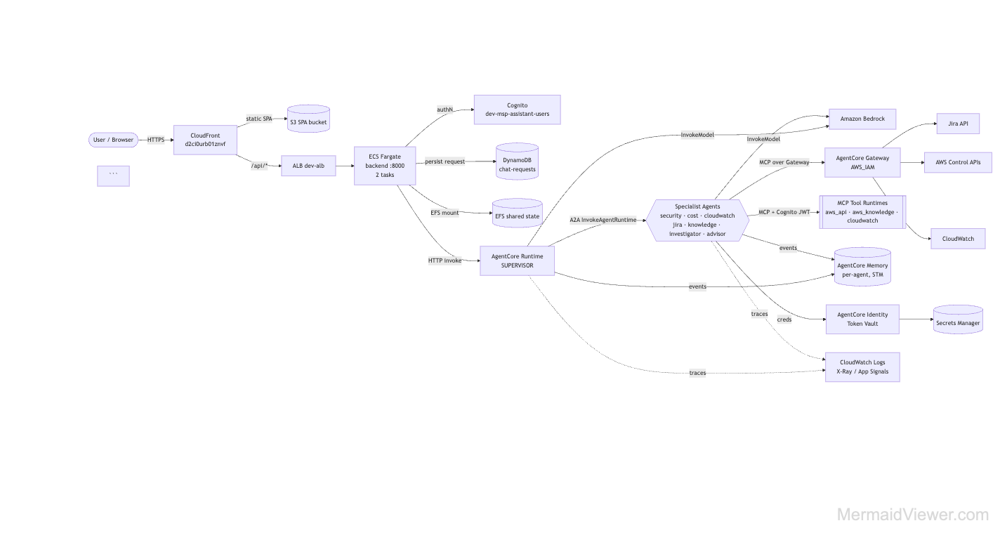
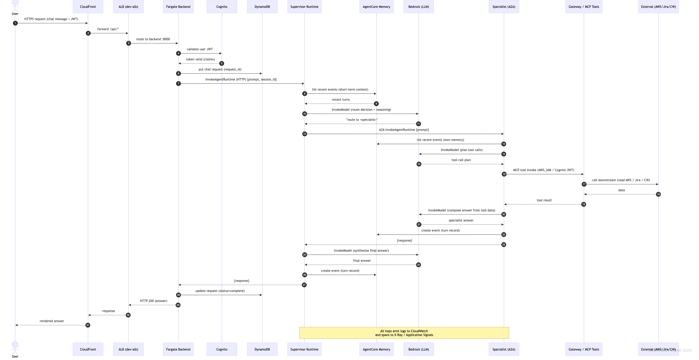
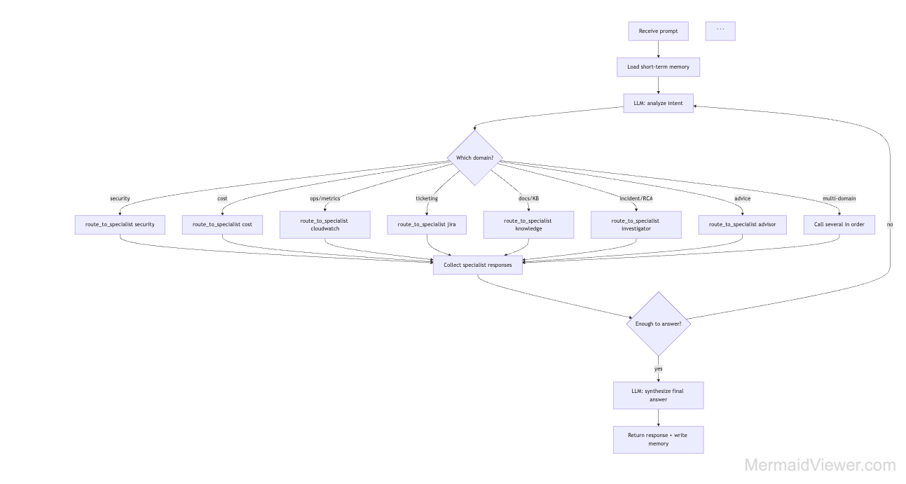
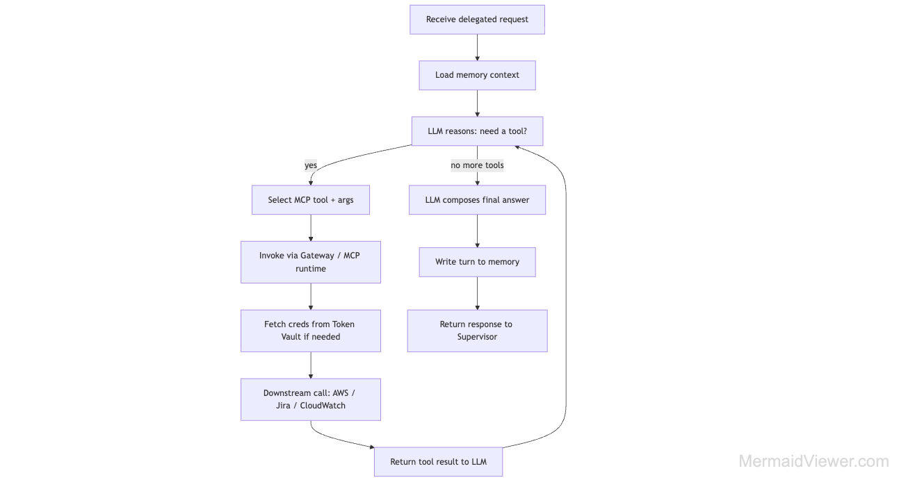
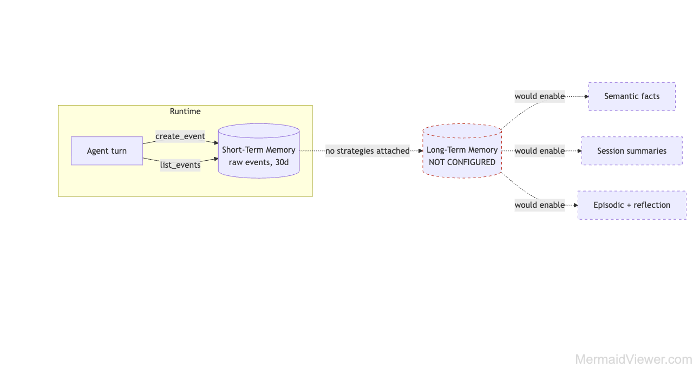
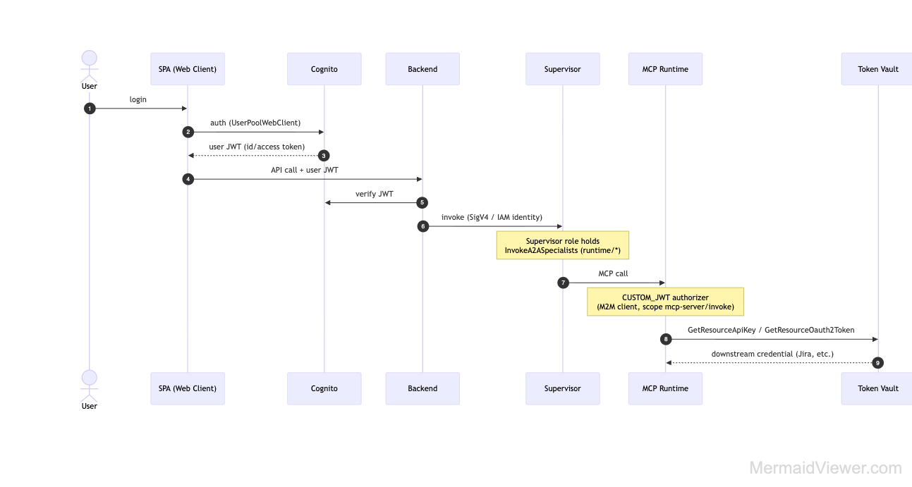

1. What this POC is about
A supervisor-orchestrated, multi-agent AI assistant for MSP / SRE operations, built on Amazon Bedrock AgentCore. A tenant operator asks a plain-English question ("is there any issue in my env?", "why is checkout slow?") and the system investigates that tenant's telemetry, validates against live AWS, and returns a grounded root-cause analysis.
The one-sentence mental model
A Supervisor agent reads the question, decides which specialist agents to call (RCA investigator, CloudWatch, security, cost, Jira, knowledge, advisor), each specialist runs a ReAct loop calling tools (SQL over the tenant telemetry DB, live AWS reads via MCP), and the supervisor synthesizes the answers — all scoped to the one tenant the operator selected in the UI.
Who does what
| Layer | Responsibility | Deployed as |
|---|---|---|
| SPA (chat UI) | Login, tenant switch, ask questions, render streamed answers | S3 + CloudFront (d2e9bh1pq1a0sj.cloudfront.net) |
| Backend API | Auth, tenant credential switch, persist requests, invoke supervisor, stream results | ECS Fargate behind ALB (FastAPI :8000) |
| Supervisor | Intent understanding + routing (LangGraph ReAct, 7 delegation tools) | AgentCore Runtime HTTP |
| Specialists | Do the actual work (RCA, metrics, security, cost, tickets, docs) | AgentCore Runtimes A2A |
| Tools | SQL on telemetry DB; live AWS reads; Jira | SQL toolkit + AgentCore Gateway / MCP runtimes MCP |
POC/agentcore-poc-dev +
live discovery of account 001961766007). The two tenant journeys are realistic reconstructions grounded
in the actual agent code — where a payload or query is illustrative it is labelled as such.
2. Prerequisites & AWS services
To stand up and run this POC you need the following AWS services wired together. They are grouped by role.
Core AI / agent platform
| Service | Why it is needed |
|---|---|
| Amazon Bedrock | The LLMs. Supervisor uses Claude Sonnet 4.5; investigator uses Claude Haiku 4.5. Accessed via cross-region inference profiles (71 enabled). |
| Bedrock AgentCore — Runtime | Serverless container hosting for every agent (supervisor + 7 specialists + 3 MCP tool servers). Python 3.11, session idle 900s / max 8h. |
| AgentCore — Gateway | MCP endpoint (AWS_IAM auth) fronting tool targets: AWS API MCP, CloudWatch MCP, AWS Knowledge MCP, Jira (OpenAPI). |
| AgentCore — Memory | Per-agent conversational memory (short-term events, 30-day expiry). |
| AgentCore — Identity | Workload identities per runtime + token vault (credential providers for Gateway OAuth2 and Jira API key). |
Application & edge
| Service | Why it is needed |
|---|---|
| Amazon S3 | Hosts the static SPA; also stores runtime deployment zips and analytics/eval data. |
| Amazon CloudFront | TLS edge for the SPA + /api/* routing to the ALB. |
| Application Load Balancer | Internet-facing entry to the backend on port 8000. |
| Amazon ECS (Fargate) | Runs the FastAPI backend (2 tasks). No app logic in Lambda. |
| Amazon EFS | Shared encrypted state mounted to backend tasks. |
| Amazon DynamoDB | chat-requests table — correlates each async chat request for the fire-and-poll / SSE pattern. |
| Amazon VPC | 3-tier dev-vpc for the backend; VPC endpoints for ECR/logs/monitoring. |
Identity, data & secrets
| Service | Why it is needed |
|---|---|
| Amazon Cognito | End-user login (SPA web client) + M2M client issuing JWTs for MCP runtime authorization. |
| AWS Secrets Manager | Per-tenant cross-account credentials under msp-credentials/<tenant>; Jira API key; token-vault backing. |
| AWS STS + cross-account IAM roles | The MSP account assumes a role in each tenant AWS account (unique external_id, role MSP-<tenant>-Role). |
| Telemetry database (PostgreSQL / RDS) | Holds each tenant's OpenTelemetry data (otel_metrics, otel_logs, otel_spans) that the RCA investigator queries. |
| Amazon CloudWatch + X-Ray / Application Signals | Runtime logs, traces and APM for the agents themselves (observability). |
| AWS CloudTrail | Audit trail (org + local trails). |
Tooling / IaC
- AWS CDK for the frontend/backend stacks; the AgentCore SDK + CodeBuild to package and build each runtime.
- Jira (external) reached through the Gateway OpenAPI target using an API key from the token vault.
3. Detailed architecture
The platform has three planes: an application plane (SPA → CloudFront → ALB → Fargate), an agent plane (AgentCore supervisor + specialists), and a tool/data plane (Gateway/MCP tools, the tenant telemetry DB, and downstream AWS/Jira).

Component-by-component
Amazon CloudFront + S3 (edge / SPA)
The chat SPA is static assets in S3, served over TLS by CloudFront. The same distribution routes
/api/* to the ALB, so the browser talks to a single origin. This is the
d2e9bh1pq1a0sj.cloudfront.net/app you see in the UI.
ALB → ECS Fargate backend (application plane)
A public ALB forwards to a FastAPI service on Fargate (2 tasks, port 8000). The backend is the only HTTP surface — it holds no agent logic. Its jobs: verify the Cognito JWT, switch to the selected tenant's credentials, persist the request to DynamoDB, invoke the supervisor runtime, and stream progress back via SSE.
Cognito (identity)
User pool us-east-1_vyWBkPHjd. The SPA web client handles interactive login; an M2M client
issues JWTs (scope mcp-server/invoke) used to authorize calls into the MCP tool runtimes.
DynamoDB (request correlation)
Because agent work is long-running, the backend uses a fire-and-poll pattern:
POST /chat enqueues a background task and returns a request_id; the SPA polls
GET /chat/{id} or subscribes to GET /chat/{id}/stream (SSE). Progress events
(agent switches, tool calls, content chunks) are written to the chat-requests table as they happen.
AgentCore Supervisor Runtime HTTP
A LangGraph create_react_agent with 7 delegation tools. It loads recent memory, reasons about
intent, and calls one or more specialists via InvokeAgentRuntime (A2A). The supervisor's IAM role
carries an InvokeA2ASpecialists permission — the IAM expression of the orchestration pattern.
Specialist Runtimes A2A
Seven specialists: investigator (RCA over the telemetry DB), cloudwatch (live alarms/metrics/logs), security, cost, jira, knowledge, advisor. Each is its own runtime with its own IAM role and memory, and each runs the same ReAct loop pattern with domain-specific tools.
Gateway / MCP tool runtimes (tool plane) MCP
Live AWS reads and Jira go through the AgentCore Gateway (MCP, AWS_IAM) and dedicated MCP tool runtimes (AWS API, CloudWatch, AWS Knowledge — Cognito-JWT authorized). The RCA investigator is different: it talks directly to the tenant telemetry database with a SQL toolkit (not through the Gateway).
Amazon Bedrock (model plane)
Every reasoning step is a Bedrock InvokeModel call. Supervisor → Claude Sonnet 4.5;
investigator → Claude Haiku 4.5 (fast, cheap, many SQL turns). temperature=0 for determinism.
dev-vpc. Only the ECS backend and its data/mount resources live in the VPC.
4. End-to-end request flow
The canonical path for one question that needs one specialist. Every hop emits logs to CloudWatch and spans to X-Ray / Application Signals.

- Browser → CloudFront → ALB → Fargate. The SPA sends the chat message + Cognito
id_tokentoPOST /chat. - Auth. Backend verifies the JWT against Cognito and extracts
user_id. - Tenant switch. Backend calls
WorkspaceContext.set_current_account(account_name), fetching that tenant's STS creds from Secrets Manager into a per-requestContextVar(no cross-request leakage). - Persist + session. Backend writes the request to DynamoDB and derives
session_id = msp-{user_id}-{conversation_id}. - Memory load. Backend loads the last 3 turns (STM) for context.
- Invoke supervisor.
invoke_agent_runtime(HTTP) with payload{prompt, account_name, session_id, user_context}. - Supervisor reasons + routes. LangGraph ReAct: Bedrock decides which tool(s) to call, then invokes the specialist(s) via A2A.
- Specialist ReAct loop. The specialist calls its tools (SQL on the tenant DB, or live AWS via MCP with tenant STS creds), reasons over results, composes an answer.
- Synthesis. Supervisor combines specialist output into a final grounded answer; the turn is saved to memory.
- Stream back. Progress + content events flow to DynamoDB → SSE → SPA renders the answer with the acting agent + latency.
5. AgentCore components — significance & how we used each
| Component | What it is | How this POC uses it |
|---|---|---|
| Runtime | Serverless, session-isolated container hosting for agents; supports HTTP, A2A and MCP protocols. | 15 runtimes: 1 supervisor (HTTP), 7 specialists (A2A), 3 MCP tool servers, 3 legacy. Each has its own IAM role + memory. Session idle 900s / max 8h. |
| Gateway | Turns APIs/Lambdas/MCP servers into governed MCP tools behind one endpoint with managed auth. | MCP gateway (AWS_IAM) fronting AWS API MCP, CloudWatch MCP, AWS Knowledge MCP, and Jira (OpenAPI). Specialists call tools through it. |
| Memory | Managed short-term (events) + long-term (strategy-extracted records) conversational memory. | One STM memory per agent (30-day expiry, strategies: []). Supervisor loads last 3 turns, saves each turn. LTM strategies exist but are not yet wired (see §6). |
| Identity | Workload identities for agents + a token vault for outbound credentials (OAuth2 / API key). | Per-runtime workload identity; token vault holds Gateway OAuth2 providers + the Jira API key, fetched at runtime via GetResourceApiKey / GetResourceOauth2Token. |
| Observability | Built-in CloudWatch logs + X-Ray/GenAI spans + Application Signals for every runtime. | Per-runtime log groups /aws/bedrock-agentcore/runtimes/<name>-DEFAULT, OTEL span streams, App Signals enabled. See §11. |
| Guardrails / Policy | Bedrock Guardrails for PII, denied topics, prompt-injection filtering. | Gap: runtimes hold ApplyGuardrail permission but no guardrail is configured yet. Input is sanitized in-code (sanitize_user_input). |
Supervisor routing logic

The supervisor's system prompt encodes SRE methodology: for RCA it investigates first
(tenant DB telemetry via investigate_scenario), then validates against live AWS
(check_cloudwatch), then synthesizes. It never asks which tenant — the account_name
is passed automatically and all tools are tenant-scoped.
6. Memory & ReAct internals
The specialist ReAct loop

Each specialist is a LangGraph create_react_agent(llm, tools, prompt). The loop:
- Reason — Bedrock decides whether a tool is needed and which one, with what arguments.
- Act — invoke the tool (SQL query, or live AWS read via MCP with tenant creds).
- Observe — the tool result is appended to the message history.
- Repeat — the model sees the observation and decides the next step (recursion limit 30 for the investigator).
- Answer — when no more tools are needed, compose the final structured response.
Memory write/read path (as deployed)

create_event / list_events. No strategies attached → no cross-session extraction.Memory is keyed by actorId (the user) and sessionId (the conversation). The supervisor
loads the last 3 turns before reasoning and writes the turn after answering. Because strategies: [],
there is no semantic/episodic long-term recall yet — a known gap (§12).
7. Multi-tenancy model
A tenant = a customer AWS account that the MSP manages. Tenants are added through the SPA's
3-step "Add Customer Account" wizard, which maps exactly to the backend account_service flow.

Adding a tenant (the wizard = the code)
| Wizard step | Backend call | What happens |
|---|---|---|
| 1. Customer Info | — | Operator types a display name (e.g. demo_tenant_3) → sanitized to snake_case. |
| 2. Setup Instructions | prepare_account() | Generates a stable external_id = msp-<name>-<uuid8> and role name MSP-<name>-Role; stores in Secrets Manager (status=preparing). Operator creates that IAM role in the tenant's AWS account. |
| 3. Test Connection | create_account() | Operator supplies the tenant AWS account ID; backend does an sts:AssumeRole. Success → status=active; failure → pending (fix trust policy, retry). |
How isolation works at request time
- Selected tenant → credentials. The account switcher in the SPA sets
account_name. The backend resolves that to the tenant's STS credentials (msp-credentials/<name>) held in a per-requestContextVar. - Credentials flow to tools. Live-AWS tools (e.g. CloudWatch) build a boto3 session from those tenant STS creds, so every AWS read hits the tenant's account, not the MSP account.
- Telemetry DB filter. The RCA investigator passes
tenant_idand is instructed to filter every query by it.
otel_* tables, and tenant_id is
regex-sanitized (prevents injection) but the filter is not guaranteed to be applied. Hard isolation needs a
DB-level control — a per-tenant Postgres role or Row-Level Security. This is documented in the
repo and tracked as a gap; do not rely on it for hard data separation as-is.
In the screenshots, the account switcher lists poc_account (021448121605),
acme, and test_tenant. In the journeys below we use Tenant 1 and
Tenant 2 as two such customer accounts with different problems.
8. Tenant 1 journey — RCA for a slowness / latency issue
8.1 Authentication & authorization
id_token (JWT) with her sub and email claims.
account_name: "acme_corp" with the request.
set_current_account("acme_corp") → fetches
msp-credentials/acme_corp STS creds into a per-request ContextVar. Authorization to Acme's AWS
account is via the cross-account role MSP-acme_corp-Role (assumed with the stored external_id).
8.2 Request construction
POST /chat (Authorization: Bearer <id_token>)
{
"message": "Checkout feels slow since this morning — find the root cause",
"account_name": "acme_corp",
"conversation_id": "c-8841"
}
→ backend derives session_id = "msp-<alice_sub>-c-8841"
→ DynamoDB put(request_id), returns request_id; SPA opens SSE /chat/{id}/stream8.3 Supervisor routing (ReAct)
The supervisor loads the last 3 turns, then Bedrock (Claude Sonnet 4.5) classifies intent as RCA / performance degradation. Per its SRE prompt it chooses to investigate first, then validate:
Supervisor tool call #1 → investigate_scenario(
prompt="Checkout latency degraded since this morning. Find root cause."
) # A2A InvokeAgentRuntime → investigator, payload includes account_name="acme_corp"8.4 Investigator ReAct loop (SQL over the tenant telemetry DB)
The investigator builds a per-tenant SQL agent over otel_metrics, otel_logs,
otel_spans and follows its 7-phase methodology. Representative tool calls:
sql_db_list_tables Phase 1 — discoverysql_db_schema (otel_metrics, otel_spans) understand columnsts, metric_name, value, labels(jsonb); spans have service, duration_ms, trace_id.
sql_db_query — quantify the symptom Phase 2SELECT date_trunc('hour',ts) h, avg(value)
FROM otel_metrics
WHERE tenant_id='acme_corp' AND metric_name='checkout_latency_ms'
GROUP BY 1 ORDER BY 1; -- p50 rose 180ms → 1450ms after 08:00sql_db_query — narrow by dimension Phase 3 (the key step)SELECT labels->>'region' region, avg(value)
FROM otel_metrics
WHERE tenant_id='acme_corp' AND metric_name='checkout_latency_ms'
GROUP BY 1 ORDER BY 2 DESC; -- Region-B slow, A/C normalsql_db_query — correlate spans Phase 4SELECT service, avg(duration_ms)
FROM otel_spans
WHERE tenant_id='acme_corp' AND labels->>'region'='Region-B'
GROUP BY 1 ORDER BY 2 DESC; -- payment-service span dominatessql_db_query_checker then sql_db_query — false-lead elimination Phase 5otel_logs infra_change stream).
8.5 Validation against live AWS
Supervisor tool call #2 → check_cloudwatch(
prompt="Any active alarms on payment-service / connection pool in Region-B?"
) # A2A → cloudwatch specialist
# tool: get_cloudwatch_data(query="alarms") using acme_corp STS creds
# → confirms a DB-connection alarm in ALARM state since 08:058.6 Synthesis & response
The supervisor merges the RCA (root cause = connection-pool exhaustion after the 08:00 deploy) with the live alarm confirmation, writes the turn to memory, and streams the final answer. The SPA renders it with the acting agent badge (Investigator → CloudWatch) and total latency.
9. Tenant 2 journey — RCA for an error-rate increase
account_name (→ different STS creds & tenant_id filter), the symptom metric
(error rate vs latency), and that this journey also exercises the Jira specialist.
9.1 Authentication & authorization
actorId) → his own memory namespace, distinct from Alice's.
account_name: "test_tenant".
set_current_account("test_tenant") → STS creds from msp-credentials/test_tenant via role
MSP-test_tenant-Role. Crucially, this is a different account than Tenant 1 — the
ContextVar guarantees Bob's request never sees Acme's credentials even under concurrency.
9.2 Request construction
POST /chat (Authorization: Bearer <bob_id_token>)
{
"message": "API error rate jumped this afternoon — RCA and open a ticket if real",
"account_name": "test_tenant",
"conversation_id": "c-2207",
"workflow_enabled": true
}
→ session_id = "msp-<bob_sub>-c-2207"9.3 Supervisor routing (ReAct)
Intent = RCA (error spike) plus a ticketing action. Supervisor plans investigate → validate → file ticket:
tool call #1 → investigate_scenario(prompt="API error rate spiked this afternoon. Root cause?")
tool call #2 → check_cloudwatch(prompt="Active alarms / 5xx on the API this afternoon?")
tool call #3 → manage_jira(prompt="Create incident: API 5xx spike, root cause <...>")9.4 Investigator ReAct loop (error-rate signal)
sql_db_list_tables + sql_db_schema Phase 1tenant_id='test_tenant'.
sql_db_query — quantify error rate Phase 2SELECT date_trunc('hour',ts) h, avg(value)
FROM otel_metrics
WHERE tenant_id='test_tenant' AND metric_name='api_error_rate'
GROUP BY 1 ORDER BY 1; -- 0.2% → 6.8% after 14:00sql_db_query — narrow by endpoint + status Phase 3SELECT labels->>'route' route, labels->>'status' st, count(*)
FROM otel_logs
WHERE tenant_id='test_tenant' AND ts > '14:00'
GROUP BY 1,2 ORDER BY 3 DESC; -- POST /orders 503s dominatesql_db_query — correlate to a dependency Phase 4otel_spans for /orders: downstream inventory-service returning 503 →
traces to a failing pod after a 14:00 rollout (infra_change_logs).
/orders (not global) → dependency fault, not gateway. Produces the structured RCA.
9.5 Validation + ticket creation
check_cloudwatch → get_cloudwatch_data(query="alarms") # test_tenant STS creds
→ 5xxErrorRate alarm ALARM since 14:03 (confirms it is real)
manage_jira → Gateway OpenAPI target (Jira), API key from AgentCore token vault
→ creates INCIDENT ticket "API 5xx spike — inventory-service", returns key OPS-44719.6 Synthesis & response
Supervisor synthesizes: root cause = inventory-service failing after the 14:00 rollout causing 503s on
/orders; confirmed by the live 5xx alarm; incident OPS-4471 filed. Turn saved to Bob's memory;
answer streamed to the SPA with agent badges Investigator → CloudWatch → Jira.
POST /orders 503s from a failed inventory-service rollout at 14:00,
confirmed by a live 5xx alarm, and a Jira incident (OPS-4471) opened automatically. Recommendation: roll back the
14:00 inventory-service deploy and verify error rate returns to baseline.10. Side-by-side comparison
| Aspect | Tenant 1 (acme_corp) | Tenant 2 (test_tenant) |
|---|---|---|
Operator identity (Cognito actorId) | alice@… | bob@… (separate memory namespace) |
Selected account_name | acme_corp | test_tenant |
| Cross-account role assumed | MSP-acme_corp-Role | MSP-test_tenant-Role |
| Telemetry filter | tenant_id='acme_corp' | tenant_id='test_tenant' |
| Symptom metric | checkout_latency_ms (180→1450ms) | api_error_rate (0.2%→6.8%) |
| Root cause found | Connection-pool exhaustion after 08:00 config change (Region-B) | inventory-service 503s after 14:00 rollout (/orders) |
| Specialists used | investigator → cloudwatch | investigator → cloudwatch → jira |
| Side effect | none | Jira incident OPS-4471 created |
| Isolation mechanism | Per-request ContextVar (creds) + per-tenant STS + instructed tenant_id DB filter (see limitation §7) | |
The takeaway: the agent logic is identical and tenant-agnostic. Multi-tenancy is achieved by
swapping credentials and the tenant_id filter per request — not by deploying separate agents per tenant.
11. Observability
AgentCore wires observability into every runtime automatically. What you can trace for any invocation:
- CloudWatch Logs — per-runtime groups
/aws/bedrock-agentcore/runtimes/<runtime>-DEFAULT(supervisor, each specialist, each MCP server). Look forruntime-logs-*streams for app logs andotel-rt-logs/spansstreams for telemetry. - X-Ray / GenAI spans — each hop (backend → supervisor → specialist → tool → Bedrock) is a span, so a single question produces one trace tree across runtimes.
- Application Signals (APM) — service-level latency/error/throughput views.
- DynamoDB request record — the
chat-requestsitem carries the progress-event trail (agent switches, tool calls) that the SPA streamed.
session_id (msp-<user>-<conv>)
and the supervisor's per-specialist runtimeSessionId (sup-<uuid> / rca-<uuid>).
If a runtime shows no recent streams, no invocation reached it in that window.
12. Findings & gaps
Carried forward from the live discovery and the agent code — the honest state of the POC.
| # | Severity | Finding | Recommendation |
|---|---|---|---|
| 1 | High | Telemetry-DB tenant isolation is model-instructed only (schema-wide SQL access). | Add Postgres Row-Level Security or per-tenant DB roles on the otel_* tables. |
| 2 | High | msp-gateway-execution-role has AdministratorAccess. | Scope to least privilege (invoke specific MCP targets / required reads only). |
| 3 | Med | No Bedrock Guardrails, though runtimes hold ApplyGuardrail. | Add PII / denied-topic / prompt-injection guardrails on model calls. |
| 4 | Med | All live agent memories are STM-only (strategies: []); no episodic recall. | Attach SEMANTIC + SUMMARIZATION (and EPISODIC for investigator/cloudwatch) to the per-agent memories. |
| 5 | Med | No per-tenant memory namespace design. | Define tenant/{id}/agent/{name}/actor/{actorId}/… before enabling strategies. |
| 6 | Low | CloudWatch log retention = never; single NAT; legacy MotadataAgents_* runtimes remain. | Set retention, add NAT per AZ if HA matters, decommission legacy runtimes. |
Generated from the deployed POC in account 001961766007 (us-east-1) and the
POC/agentcore-poc-dev source. Tenant journeys are realistic reconstructions grounded in the actual agent
code; illustrative payloads/queries are labelled as such.